18
优化神经网络
在本章中，我们将讨论从基本的随机梯度下降 ( SGD )方法中衍生出来的最重要的优化算法。当处理非常高维的函数时，这种方法可能非常无效，迫使模型停留在次优解中。本章讨论的优化器的目标是加速收敛和避免任何次优。此外，我们还将讨论如何将LT8】1和LT12】2正则化应用于深度神经网络层，以及如何使用这些高级方法来避免过拟合。
特别是，本章涵盖的主题如下:
- 优化的SGD算法(Momentum、RMSProp、Adam、AdaGrad和AdaDelta)
- 正规化技术和辍学
- 批量标准化
在前一章讨论了神经建模的基本概念之后，我们现在可以开始讨论如何提高收敛速度以及如何实现最常见的正则化技术。
优化算法
当我们在前一章中讨论反向传播算法时，我们展示了SGD策略如何能够容易地用于训练具有大数据集的深度网络。这种方法是相当稳健和有效的；然而，要优化的函数通常是非凸的，并且参数的数量非常大。
这些条件极大地增加了找到鞍点(而不是局部极小值)的概率，并且可以在曲面几乎平坦时减慢训练过程(如下图所示，其中点(0，0)是鞍点)。
双曲抛物面中鞍点的示例
考虑到前面的例子，由于函数是 f ( x ，y)=x2—y2，偏导数和黑森为:
因此，点的一阶偏导数在(0，0)处消失，因此该点是成为极值的候选点。然而，Hessian的特征值是方程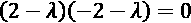的解，这导致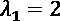和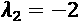，因此矩阵既不是正的也不是负(半)定的，点(0，0)是鞍点。不言而喻，这种点在优化过程中是非常危险的，因为它们可能位于梯度趋于消失的谷的中心。在这些情况下，即使许多修正也可能导致最小的移动。将标准 SGD算法应用于这些系统的常见结果如下图所示:
真实优化过程的图形表示
该算法没有达到最优配置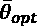，而是达到次优参数配置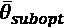，并且失去了执行进一步校正的能力，因为梯度趋于消失，并且因此它们的贡献变得可以忽略。为了减轻所有这些问题及其后果，已经提出了许多SGD优化算法，目的是加速收敛(当梯度变得非常小时也是如此)并避免病态系统的不稳定性。
梯度扰动
当超曲面是平坦的(平台)时，一个常见的问题出现了——梯度变得接近于零。缓解这一问题的一个非常简单的方法是在梯度中增加一个小的同方差噪声分量:
协方差矩阵通常是对角的，所有元素都设置为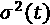，并且该值在训练过程中衰减，以避免当校正非常小时的扰动。这种方法在概念上是合理的，但是当噪声成分占主导时，其隐含的随机性会产生不期望的效果。由于很难调整深度模型中的差异，因此提出了其他(更具确定性的)策略。
气势和内斯特罗夫气势
当遇到平台时，提高SGD性能的一个更健壮的方法是基于动量的概念(类似于物理动量)。更正式地说，动量是通过采用后续梯度估计的加权移动平均值而不是精确值获得的:
新向量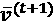包含基于过去历史的分量(并且使用参数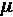加权，该参数是遗忘因子)和涉及当前梯度估计的项(乘以学习率)。使用这种方法，突然的变化变得更加困难。当勘探离开倾斜区域进入平坦区域时，动量不会立即变为零，但在一段时间内(与成比例)会保持一部分先前的梯度，使穿越平坦区域成为可能。分配给超参数的值通常介于0和1之间。直观上，小值意味着短期记忆，因为第一项衰减非常快，而接近1.0(例如，0.9)的值允许较长的记忆，受局部振荡的影响较小。与许多其他超参数一样，需要根据具体问题进行调整，因为高动量并不总是最佳选择。当需要非常小的调整时，高值可能会减慢收敛速度，但同时，接近0.0的值通常是无效的，因为内存贡献衰减得太早。使用momentum，更新规则变成如下:
内斯特罗夫动量公司提供了一个变体，它基于y .内斯特罗夫在数学优化领域获得的结果，已被证明可以加速许多算法的收敛。想法是基于当前动量确定临时参数更新，然后将梯度应用于该向量以确定下一个动量(它可以被解释为前瞻性梯度评估，旨在减轻考虑每个参数的移动历史的不正确校正的风险):
该算法在几个深度模型中表现出性能提升；然而，它的使用仍然是有限的，因为，正如你将在本章后面看到的，更新的算法很快就在动量上超过了标准的SGD，它们成为了几乎任何现实生活任务的首选。
在张量流和Keras中具有动量的SGD
使用TensorFlow/Keras时，可以通过直接实例化SGD类来定制SGD优化器，并在编译模型时使用它:
import tensorflow as tf
sgd = tf.keras.optimizers.SGD(lr=0.0001,
momentum=0.8,
nesterov=True)
model.compile(optimizer=sgd,
loss='categorical_crossentropy',
metrics=['accuracy'])
类SGD接受参数lr(默认设置为0.01的学习率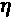)、momentum(参数)、nesterov(指示是否采用内斯特罗夫动量的布尔值)和可选衰减参数，以指示学习率是否必须随更新衰减，公式如下:
显然，当 decay = 0 时，学习率在整个训练过程中保持不变。正值时，它开始以与衰减成反比的速度衰减。
下图显示了三个衰减的学习率:
学习率在100个时期内以3个不同的衰减值衰减的图
正如可能看到的，在默认值为衰减 = 10 -2 的情况下，假设的初始学习率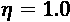在大约50个周期后达到0.5，并且在训练过程结束时略低于0.4。正如所料，指数级的更小衰减对学习速度有着巨大的影响。比如衰变 = 10 -3 在过程结束时达到0.9，而衰变 = 10 -6 几乎没有影响。我们将在大多数例子中使用这个值；特别地，当历元的数量不是非常大(例如， n < 200 )并且具有几乎恒定的学习速率时，我们在整个过程中观察到恒定的训练/验证损失减少。相反，在一些时期之后性能变得更差的情况下，这可能意味着算法已经达到最小值的盆地，但是在没有达到最小值的情况下继续向两侧跳跃。在这些情况下，较小的学习率有助于通过成比例的较长训练过程来提高准确度。
RMSProp
RMSProp是由G. Hinton提出的自适应算法，部分基于动量的概念。代替考虑整个梯度向量的,它试图分别优化每个参数，以增加缓慢变化的权重的校正(可能需要更剧烈的修改),并减少快速变化的权重的更新幅度(通常更不稳定)。该算法考虑梯度的平方(对符号不敏感)，计算每个参数变化速度的指数加权移动平均值:
然后执行权重更新，如下所示:
参数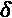是一个小常数(如10 -6 )，增加该参数是为了避免变化速度为零时数值不稳定。前面的表达式可以用更简洁的方式重写:
使用这种符号，很明显RMSProp的作用是调整每个参数的学习率，以便在必要时增加学习率(几乎冻结权重),并在振荡的风险较高时降低学习率。在实际实现中，学习速率总是使用指数或线性函数在时期上衰减。
张量流和Keras中的RMSProp
shows the usage of RMSProp with TensorFlow/Keras: import tensorflow as tf rmp = tf.keras.optimizers.RMSprop(lr=0.0001, rho=0.8, epsilon=1e-6, decay=1e-2) model.compile(optimizer=rmp, loss='categorical_crossentropy', metrics=['accuracy'])
学习率和衰减与SGD相同。参数rho对应的是指数移动平均权重，ε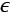是加在变化速度上提高稳定性的常数。与任何其他算法一样，如果用户想要使用默认值，可以在不实例化类的情况下声明优化器(例如，optimizer='rmsprop')。
亚当
Adam(自适应矩估计的缩写)是由Kingma和Ba提出的算法(在Kingma D. P .，Ba J .， Adam: 随机优化的一种方法，arXiv:1412.6980【cs .LG])来进一步提升RMSProp的性能。该算法通过计算每个参数的梯度及其平方的指数加权平均值来确定自适应学习速率:
在上述论文中，作者建议通过将两个估计值除以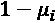来使这两个估计值(涉及一阶和二阶矩)无偏，因此新的移动平均值如下:
Adam的权重更新规则如下:
分析一下前面的表达式，就可以理解为什么这个算法经常被称为带动量的RMSProp了。事实上，术语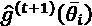的作用就像标准动量一样，计算每个参数的梯度的移动平均值(具有该过程的所有优点)，而分母作为一个自适应术语，具有与RMSProp完全相同的语义。由于这个原因，Adam经常是最广泛使用的算法之一，即使在许多复杂的任务中，它的性能与标准RMSProp相当。选择时必须考虑到由于两个遗忘因素的存在而带来的额外复杂性。一般来说，默认值(0.9)是可以接受的，但有时在决定特定配置之前，最好对几种情况进行分析。
另一个需要记住的重要元素是，当训练一些深度架构时，所有基于动量的方法都可能导致不稳定(振荡)。这就是为什么RMSProp在几乎任何研究论文中都非常分散；但是，不要把这种说法当成限制，因为亚当在很多任务上都表现突出。记住这一点很有帮助:每当训练过程看起来不稳定，学习率也很低时，最好采用不基于动量的方法(事实上，惯性项可以减缓避免振荡所需的快速修改)。
亚当在张量流和喀拉斯
usage of Adam with TensorFlow/Keras: import tensorflow as tf adam = tf.keras.optimizers.Adam(lr=0.0001, beta_1=0.9, beta_2=0.9, epsilon=1e-6, decay=1e-2) model.compile(optimizer=adam, loss='categorical_crossentropy', metrics=['accuracy'])
遗忘因子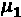和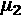由参数beta_1和beta_2表示。所有其他元素与其他算法相同。考虑到较大的参数空间，参数的选择已经由作者进行了评估，并且通常没有必要改变它们(除了学习速率)。在没有其他解决方案的特殊情况下，建议稍微减少遗忘因子和衰减(例如，在我们接下来的例子中，我们通常会采用一个小得多的衰减，等于10 -6 ，这可以避免学习速率的快速衰减)。可以重复这个过程来检查更保守的配置是否产生更好的性能。如果没有达到预期的结果，最好改变架构，因为参数的剧烈变化可能会产生不稳定性，从而恶化训练阶段。
阿达格拉德
该算法已由杜奇、哈赞和辛格提出(在杜奇j .、哈赞e .、辛格y .、在线学习和随机优化的自适应次梯度方法《机器学习研究杂志》2011年第12期)。这个想法与RMSProp非常相似，但在这种情况下，平方梯度的整个历史都被考虑在内:
权重的更新与RMSProp中的完全相同:
然而，由于平方梯度是非负的，当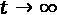时，隐式求和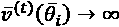。随着增长的继续，直到梯度不为空，没有办法在训练过程中保持贡献的稳定。这种效应通常在开始时很强，但在有限的次数后消失，产生零学习率。当历元数非常有限时，AdaGrad仍然是一种强大的算法，但它不能成为大多数深度模型的首选解决方案(下一个算法就是为了解决这个问题而提出的)。
使用TensorFlow和Keras的AdaGrad
shows the use of AdaGrad with TensorFlow/Keras:
import tensorflow as tf
adg = tf.keras.optimizers.Adagrad(lr=0.0001,
epsilon=1e-6,
decay=1e-2)
model.compile(optimizer=adg,
loss='categorical_crossentropy',
metrics=['accuracy'])
除了理论部分讨论的参数外，AdaGrad实现没有其他参数。至于其他优化器，通常不需要改变epsilon或decay，而总是可以调整学习率。
阿达德尔塔
AdaDelta是一种算法(泽勒医学博士提出， ADADELTA:一种自适应学习率方法，arXiv:1212.5701【cs。LG])，以解决AdaGrad的主要问题，其中用于管理整个平方梯度历史。首先，AdaDelta采用指数加权移动平均值，而不是累加器，如RMSProp:
然而，与RMSProp的主要区别是基于对更新规则的分析。当我们考虑运算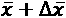时，我们假设两项具有相同的单位；但是笔者注意到，用RMSProp(以及AdaGrad)得到的自适应学习速率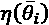是无单位的(而不是有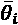的单位)。事实上，由于梯度被分解成可以近似为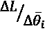的偏导数，并且假设成本函数L是无单位的，我们获得以下关系:
因此，泽勒建议应用与每个重量单位成比例的校正项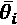。这个系数是通过考虑每个平方差的指数加权移动平均值获得的:
因此，更新后的规则如下所示:
这种方法确实更类似于RMSProp而不是AdaGrad，但是这两种算法之间的界限非常窄，特别是当历史被限制在有限的滑动窗口时。AdaDelta是一个强大的算法，但它只能在非常特殊的任务上(比如问题是病态的)胜过Adam或RMSProp。
我的建议是采用一种方法，在使用另一种方法之前，尝试优化超参数，直到精度达到最大值。如果性能一直很差，并且模型不能以任何其他方式改进，那么测试其他优化算法是一个好主意。
张量流和喀拉斯中的阿达三角洲
usage of AdaDelta with TensorFlow/Keras:
import tensorflow as tf
add = tf.keras.optimizers.Adadelta(lr=0.0001,
rho=0.9,
epsilon=1e-6,
decay=1e-2)
model.compile(optimizer=add,
loss='categorical_crossentropy',
metrics=['accuracy'])
遗忘因子由参数rho ( 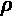)表示。至于其他方法，有必要注意不同的参数配置，因为它们会产生不稳定性。不幸的是，与更简单的机器学习算法相反，由于要优化的函数的复杂性，小变化的效果通常是不可预测的。默认选择通常是在使用一组通用任务执行网格搜索并选择最佳参数集之后获得的。
转正和退学
过度拟合是深度模型中的一个常见问题。即使对于非常大的数据集，它们极高的容量也经常会成为问题，因为学习训练集结构的能力并不总是与归纳的能力相关。深度神经网络可以很容易地成为联想记忆，但最终的内部配置可能不是最适合管理属于同一分布的样本，因为该分布在训练过程中从未出现过。不言而喻，这种行为与分离超曲面的复杂性成正比。
线性分类器过拟合的可能性极小，而多项式分类器更容易过拟合。数百、数千或更多非线性函数的组合产生了超出任何可能分析的分离超曲面。
1991年，Hornik(在Hornik K .，多层前馈网络的近似能力，神经网络，1991年4月2日)概括了数学家Cybenko两年前获得的一个非常重要的结果(并发表在Cybenko G .，sigmoid函数叠加近似法，控制、信号和系统数学，1989年2月4日)。在没有任何数学细节的情况下(然而，这并不复杂)，该定理指出MLP(不是最复杂的架构！)可以近似任何在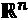的紧致子集中连续的函数。很明显，这样的结果形式化了几乎任何研究人员已经直观知道的东西，但它的力量超越了第一次撞击，因为MLP是一个有限的系统(而不是数学级数)，并且该定理假设层和神经元的数量有限。
显然，精度与复杂程度成正比；然而，几乎任何问题都没有不可接受的限制。然而，我们的目标不是学习现有的连续函数，而是管理从未知数据生成过程中抽取的样本，目的是在出现新样本时最大限度地提高准确性。不保证函数是连续的，也不保证域是一个紧子集。
正规化
在第2章、损失函数和正则化中，我们介绍了基于稍微修改的成本函数的主要正则化技术:
附加项 是权重的非负函数(例如LT25】2范数),其迫使优化过程保持参数尽可能小。当使用饱和函数(如tanh)时，基于LT29】2范数的正则化方法试图将函数的运算范围限制在线性部分，从而降低其容量。当然，最终的配置不会是最优的(这可能是过度拟合模型的结果)，而是训练和验证准确性之间的次优权衡(或者，我们可以说是偏差和方差)。
是权重的非负函数(例如LT25】2范数),其迫使优化过程保持参数尽可能小。当使用饱和函数(如tanh)时，基于LT29】2范数的正则化方法试图将函数的运算范围限制在线性部分，从而降低其容量。当然，最终的配置不会是最优的(这可能是过度拟合模型的结果)，而是训练和验证准确性之间的次优权衡(或者，我们可以说是偏差和方差)。
偏差接近0(训练精度接近1.0)的系统在分类中可能非常严格，只有当样本与训练过程中评估的样本非常相似时才会成功。这就是为什么考虑到使用新样品所获得的优势，通常会付出这样的代价。 L 2 正则化可以与任何类型的激活函数一起使用，但是效果可能不同。
例如，当权重非常大时，ReLU单元变成线性(或经常为空)的可能性增加。试图使它们接近0.0意味着迫使函数利用其非线性，而没有极大输出的风险(这会对非常深的架构产生负面影响)。这个结果有时会更有用，因为它允许以更平滑的方式训练更大的模型，从而获得更好的最终性能。
一般来说，如果不进行几次测试，几乎不可能决定正则化是否可以改善结果，但是在一些情况下，引入一个退出(我们将在下一节讨论这种方法)并调整其超参数是非常常见的。这与其说是一个精确的架构决策，不如说是一个经验性的选择，因为许多现实生活中的例子(包括最先进的模型)已经使用这种正则化技术获得了出色的结果。我建议你更喜欢理性的怀疑，而不是盲目的信任，并在选择具体的解决方案之前仔细检查模型。有时，当选择不同的(但类似的)数据集时，一个性能极高的网络被证明是无效的。这就是为什么测试不同的备选方案可以提供最佳体验，以便解决特定的问题类别。
张量流和Keras中的正则化
l2 constraint with the strength parameter set to 0.05 on a generic fully connected layer:
import tensorflow as tf
l2 = tf.keras.regularizers.l2(0.05)
…
tf.keras.layers.Dense(10, activity_regularizer=l2)
…
keras.regularizers包包含函数l1()、l2()和l1_l2()，这些函数可以应用于密集层和卷积层(我们将在下一章讨论)。这些层允许我们对权重(kernel_regularizer)、偏差(bias_regularizer)和激活输出(activation_regularizer)进行正则化，即使第一层通常被最广泛地使用。
1.5) on the weights of a layer: import tensorflow as tf kc = tf.keras.constraints.max_norm(1.5) … tf.keras.layers.Dense(10, kernel_constraint=kc) …
keras.constraints包中的Keras提供了一些函数，可用于对权重或偏差max_norm()施加最大范数、沿轴的单位范数unit_norm()、非负数non_neg()以及范数的上界和下界min_max_norm()。这种方法与正则化的区别在于，它只在必要时才应用。考虑前面的例子，施加LT17】2正则化总是有效的，而对最大范数的约束是无效的，直到该值低于预定义的阈值。
辍学
这种方法已经由Hinton等人提出(在Hinton G. E .、Srivastava N .、Krizhevsky A .、Sutskever I .、Salakhutdinov R. R .、通过防止特征检测器的共同适应来改进神经网络、arXiv:1207.0580【cs .NE])，作为防止过度拟合并允许更大的网络探索样本空间的更多区域的替代方法。这个想法相当简单——在每个训练步骤中，给定一个预定义的百分比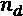，一个丢弃层随机选择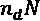个输入单元，并将它们设置为0.0(该操作仅在训练阶段有效，而当模型用于新的预测时，它将被完全删除)。
这个操作可以有多种解释。当使用更多的丢弃层时，它们的选择结果是具有减少的容量的子网络，该子网络可以更困难地过度适应训练集。许多经过训练的子网络的重叠构成了隐式集合，其预测是所有模型的平均值。如果在输入层上应用漏失，它就像一个弱数据扩充，向样本添加随机噪声(将几个单位设置为零会导致潜在的破坏模式)。同时，采用几个漏失层允许探索几个可以不断组合和改进的潜在配置。
这种策略显然是概率性的，结果会受到许多无法预料的因素的影响；然而，几个测试已经证实，当网络非常深时，使用退出是一个很好的选择，因为产生的子网络具有剩余能力，允许它们对大部分样本建模，而不会驱动整个网络冻结其配置，使训练集过拟合。另一方面，当网络较浅或包含少量神经元时，这种方法不是很有效(在这些情况下， L 2 正则化可能是更好的选择)。
根据作者的说法，辍学层应该与高学习率和权重的最大范数约束结合使用。通过这种方式，实际上，模型可以容易地学习更多的潜在配置，当学习率保持非常小时，这些配置将被避免。然而，这并不是一个绝对的规则，因为许多最先进的模型使用了一个辍学与优化算法，如RMSProp或Adam，而不是过高的学习率。
辍学的主要缺点是它减缓了培训过程，并可能导致不可接受的次优。后一个问题可以通过调整丢弃单元的百分比来缓解，但一般来说，很难完全解决它。出于这个原因，一些新的图像识别模型(如残差网络)避免了遗漏，并采用更复杂的技术来训练非常深的卷积网络，使训练集和验证集都过拟合。
与TensorFlow和Keras一起辍学
我们现在可以用一个更具挑战性的分类问题来测试 dropout技术的有效性。数据集是经典的MNIST手写数字，但Keras 允许下载和使用原始版本，该版本由7万(6万训练和1万测试)28 × 28灰度图像组成。即使这不是最佳策略，因为卷积网络应该是管理图像的首选，我们希望尝试将数字分类，将其视为扁平的784维数组。
第一步是加载和规范化数据集，使每个值都成为一个介于0和1之间的浮点数:
import tensorflow as tf
import numpy as np
(X_train, Y_train), (X_test, Y_test) = \
tf.keras.datasets.mnist.load_data()
width = height = X_train.shape[1]
X_train = X_train.reshape(
(X_train.shape[0], width * height)).\
astype(np.float32) / 255.0
X_test = X_test.reshape(
(X_test.shape[0], width * height)).\
astype(np.float32) / 255.0
Y_train = tf.keras.utils.to_categorical(
Y_train, num_classes=10)
Y_test = tf.keras.utils.to_categorical(
Y_test, num_classes=10)
在这一点上，我们可以开始测试一个没有辍学的模型。这种结构在所有实验中都很常见，它基于三个完全连接的ReLU层(2048-1024-1024 ),后面是一个有10个单元的softmax层。考虑到这个问题，我们可以尝试使用Adam优化器来训练这个模型，其中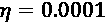和衰减集等于10 -6 :
model = tf.keras.models.Sequential([
tf.keras.layers.Dense(2048,
input_shape=(width*height,),
activation='relu'),
tf.keras.layers.Dense(1024, activation='relu'),
tf.keras.layers.Dense(1024, activation='relu'),
tf.keras.layers.Dense(10, activation='softmax')
])
model.compile(optimizer=
tf.keras.optimizers.Adam(
lr=0.0001, decay=1e-6),
loss='categorical_crossentropy',
metrics=['accuracy'])
该模型被训练200个时期，批量大小为256个数据点:
history_nd = model.fit(X_train, Y_train,
epochs=200,
batch_size=256,
validation_data=(X_test, Y_test))
前面代码片段的输出是:
Train on 60000 samples, validate on 10000 samples Epoch 1/200 60000/60000 [==============================] - 3s 50us/sample - loss: 0.3997 - accuracy: 0.8979 - val_loss: 0.1672 - val_accuracy: 0.9503 Epoch 2/200 60000/60000 [==============================] - 2s 37us/sample - loss: 0.1371 - accuracy: 0.9605 - val_loss: 0.1138 - val_accuracy: 0.9640 Epoch 3/200 60000/60000 [==============================] - 2s 36us/sample - loss: 0.0887 - accuracy: 0.9740 - val_loss: 0.0893 - val_accuracy: 0.9716 … Epoch 199/200 60000/60000 [==============================] - 3s 43us/sample - loss: 2.9862e-09 - accuracy: 1.0000 - val_loss: 0.1380 - val_accuracy: 0.9845 Epoch 200/200 60000/60000 [==============================] - 3s 42us/sample - loss: 2.9624e-09 - accuracy: 1.0000 - val_loss: 0.1380 - val_accuracy: 0.9845
即使没有进一步的分析，我们也可以立即注意到模型是过度拟合的。在200个历元之后，训练精度为1.0，损失接近0.0，而验证精度相当高，但验证损失略低于在第二个历元结束时获得的损失。
为了更好地了解发生了什么，在培训过程中绘制准确性和损失是有用的:

无压差时MLP的精度(左)和损耗(右)曲线
可以看出，验证损失在前10个时期达到最小，然后立即开始增长(由于其形状，这有时被称为 U形曲线)。同一时刻，训练精度达到1.0。从那时起，模型开始过度拟合，学习训练集的完美结构，但失去了泛化能力。事实上，即使最终的验证准确度相当高，损失函数也表明当新样本出现时缺乏鲁棒性。
因为损失是分类交叉熵，所以结果可以被解释为模型已经学习了与验证集分布部分不匹配的分布。
因为我们的目标是使用模型预测新样本，所以这种配置是不可接受的。因此，我们再次尝试，使用一些辍学层。正如作者所建议的，我们还将学习速率增加到0.1(切换到动量SGD优化器，以避免由于RMSProp或Adam的自适应性而导致的爆炸)，用均匀分布(-0.05，0.05)初始化权重，并将最大范数约束设置为2.0。这种选择允许探索更多的子配置，而没有过高重量的风险。下降应用于25%的输入单元和所有完全连接的层，百分比设置为50%:
import tensorflow as tf
model = tf.keras.models.Sequential([
tf.keras.layers.Dropout(0.25,
input_shape=(width*height,),
seed=1000),
tf.keras.layers.Dense(2048,
kernel_initializer='uniform',
kernel_constraint=
tf.keras.constraints.max_norm(2.0),
activation='relu'),
tf.keras.layers.Dropout(0.5, seed=1000),
tf.keras.layers.Dense(1024,
kernel_initializer='uniform',
kernel_constraint=
tf.keras.constraints.max_norm(2.0),
activation='relu'),
tf.keras.layers.Dropout(0.5, seed=1000),
tf.keras.layers.Dense(1024,
kernel_initializer='uniform',
kernel_constraint=
tf.keras.constraints.max_norm(2.0),
activation='relu'),
tf.keras.layers.Dropout(0.5, seed=1000),
tf.keras.layers.Dense(10, activation='softmax')
])
model.compile(optimizer=
tf.keras.optimizers.SGD(lr=0.1, momentum=0.9),
loss='categorical_crossentropy',
metrics=['accuracy'])
使用相同的参数执行训练过程:
history = model.fit(X_train, Y_train,
epochs=200,
batch_size=256,
validation_data=(X_test, Y_test))
前一个块的输出是:
Train on 60000 samples, validate on 10000 samples Epoch 1/200 60000/60000 [==============================] - 3s 53us/sample - loss: 0.4993 - accuracy: 0.8393 - val_loss: 0.1497 - val_accuracy: 0.9559 Epoch 2/200 60000/60000 [==============================] - 3s 45us/sample - loss: 0.2299 - accuracy: 0.9295 - val_loss: 0.1118 - val_accuracy: 0.9654 … Epoch 199/200 60000/60000 [==============================] - 3s 52us/sample - loss: 0.0195 - accuracy: 0.9938 - val_loss: 0.0516 - val_accuracy: 0.9878 Epoch 200/200 60000/60000 [==============================] - 5s 77us/sample - loss: 0.0185 - accuracy: 0.9944 - val_loss: 0.0510 - val_accuracy: 0.9875
最后的情况是发生了戏剧性的变化。该模型不再过度拟合(即使有可能在顺序中对其进行改进以增加验证准确性),并且验证损失低于初始损失。为了得到确认，让我们分析一下准确度/损失图:
有压差时MLP的精度(左)和损耗(右)曲线
结果显示了一些缺陷，因为验证损失在许多时期几乎是平的；然而，同样的模型，具有更高的学习率和更弱的算法，实现了更好的最终性能(0.988验证精度)和更优越的泛化能力。最先进的模型也能达到等于0.995的验证精度，但我们的目标是展示漏失层在防止过拟合方面的效果，此外，还能产生对新样本或高噪声样本更加鲁棒的最终配置。我邀请你用不同的参数，更大或更小的网络，以及其他优化算法重复实验，试图进一步减少最终的验证损失。
TesorFlow/Keras还实现了两个额外的脱落层。GaussianDropout(https://keras.io/layers/core/)将输入样本乘以高斯噪声:
当、时，常量的值可以通过参数rate(在0和1之间)设置，而小值会产生无效效果，如。该层作为输入层非常有用，可以模拟随机数据扩充过程。
另一个类是AlphaDropout，其工作方式与前一个类似，但对输出进行了重新归一化，以保持原始均值和方差(这种效果非常类似于通过采用下一段中描述的技术以及噪声层获得的效果)。
当处理概率层时(比如dropout)，我总是建议设置随机种子(当使用TensorFlow后端时，设置np.random.seed(...)和tf.random.set_seed(...))。这样，就有可能重复实验，不带任何偏见地比较结果。如果没有明确设置随机种子，每个新的训练过程都将是不同的，并且不容易比较性能，例如，在固定数量的时期之后。
批量归一化
在遍历网络之前，我们可以测量样本均值和方差:
在第一层之后(为了简单起见，让我们假设激活函数，fT25】a(x)，总是相同的)，批处理被转换成如下:
一般来说，不能保证新的均值和方差是相同的。相反，很容易观察到在整个网络中增加的修改。这种现象被称为协变量转移，它负责渐进的训练速度衰减，因为每一层需要不同的适应。Ioffe和Szegedy(在Ioffe S .，Szegedy C .，批量归一化:通过减少内部协变量移位加速深度网络训练，arXiv:1502.03167【cs .LG])提出了一种方法来缓解这个问题，这种方法被称为批处理规范化(BN)。
这个想法是重新归一化一个层的线性输出(在应用激活函数之前或之后),以便该批具有零均值和单位方差。因此，BN层的首要任务是计算:
然后，将每个样本转换为归一化版本(包含参数以提高数值稳定性):
然而，由于BN除了加速训练过程之外没有计算目的，所以变换必须总是恒等式(为了避免扭曲和偏向数据)；因此，实际输出将通过应用线性运算获得:
两个参数和是由SGD算法优化的变量；因此，保证每次转换都不会改变数据的比例和位置。这些层仅在训练阶段有效(如退出)，但与其他算法相反，当模型用于对新样本进行预测时，它们不能被简单地丢弃，因为输出会不断有偏差。为了避免这个问题，作者建议通过对批次求平均值来近似估计XT5】b的平均值和方差(假设有k个数据点的NT9】b批次):
使用这些值，BN层可以转换成以下线性运算:
不难证明，当批次数量增加时，这种近似变得越来越精确，并且误差通常可以忽略不计。然而，当批量非常小时，统计可能相当不准确；因此，考虑到一个批次的代表性，应该使用这种方法。如果数据生成过程简单，即使是小批量也足以描述实际分布。
当取而代之的是 P 数据更复杂时，BN需要更大的批次以避免不正确的调整(一个可行的策略是将全局平均值和方差与计算出的平均值和方差进行比较，对一些批次进行采样，并尝试设置使差异最小化的批次大小)。然而，这个简单的过程可以大大减少协变量移位，并提高非常深的网络(包括著名的残差网络)的收敛速度。
此外，BN允许我们采用更高的学习速率，因为层是隐式饱和的，永远不会爆炸。此外，已经证明BN也具有二次正则化效果，即使它对权重不起作用。原因与针对 L 2 提出的原因没有太大不同，但是在这种情况下，由于变换本身存在残余效应(部分由参数 和的可变性引起)，这可以鼓励对样本空间的不同区域的探索。然而，这不是主要的效果，将这种方法作为正则化方法并不是一个好的实践。
使用TensorFlow和Keras进行批量标准化的示例
为了展示这种技术的特点，让我们重复前面的例子，使用没有丢失的MLP，但是在ReLU激活之前在每个完全连接的层之后应用BN。这个例子与第一个非常相似，但是在这种情况下，我们将把Adam学习速率增加到0.001，保持相同的衰减:
import tensorflow as tf
model = tf.keras.models.Sequential([
tf.keras.layers.Dense(2048,
input_shape=(width*height,),
activation='relu'),
tf.keras.layers.Dense(1024),
tf.keras.layers.BatchNormalization(),
tf.keras.layers.Activation('relu'),
tf.keras.layers.Dense(1024),
tf.keras.layers.BatchNormalization(),
tf.keras.layers.Activation('relu'),
tf.keras.layers.Dense(10),
tf.keras.layers.BatchNormalization(),
tf.keras.layers.Activation('softmax'),
])
model.compile(optimizer=
tf.keras.optimizers.Adam(lr=0.001,
decay=1e-6),
loss='categorical_crossentropy',
metrics=['accuracy'])
我们现在可以再次使用相同的参数进行训练:
history_bn = model.fit(X_train, Y_train,
epochs=200,
batch_size=256,
validation_data=(X_test, Y_test))
前面代码片段的输出是:
Train on 60000 samples, validate on 10000 samples Epoch 1/200 60000/60000 [==============================] - 13s 224us/sample - loss: 0.3881 - accuracy: 0.9556 - val_loss: 0.3788 - val_accuracy: 0.9769 Epoch 2/200 60000/60000 [==============================] - 13s 222us/sample - loss: 0.1966 - accuracy: 0.9842 - val_loss: 0.1916 - val_accuracy: 0.9805 … Epoch 199/200 60000/60000 [==============================] - 12s 208us/sample - loss: 7.6897e-07 - accuracy: 1.0000 - val_loss: 0.0710 - val_accuracy: 0.9889 Epoch 200/200 60000/60000 [==============================] - 12s 207us/sample - loss: 6.6039e-07 - accuracy: 1.0000 - val_loss: 0.0719 - val_accuracy: 0.9890
该模型再次过度拟合，但现在最终验证精度仅略高于使用漏失层实现的精度。为了更好地分析培训过程，让我们绘制准确度和损失图:
批量标准化的MLP的准确度(左)和损耗(右)曲线
BN的效果改善了性能，减缓了过拟合。同时，消除协变量偏移避免了U曲线保持相当低的验证损失(尽管在训练过程结束时可能会观察到轻微的性能下降)。此外，该模型在时期135-140期间达到了约0.99的验证准确度，具有剩余的正趋势，然而，这不是实质性的。
类似于前面的例子，这个解决方案并不完美，但它是进一步优化的良好开端。对大量的时期继续训练过程，监视确认损失和准确性，这将是一个好主意。此外，可以混合dropout和BN，或者使用Keras AlphaDropout层进行实验。然而，如果，在第一个例子中(没有退出)，峰值训练准确度与验证损失的开始正趋势相关。
在这种情况下，学习到的分布似乎与验证集的分布没有太大的不同。换句话说，BN不能防止训练集过拟合，但它可以避免泛化能力的下降(当没有BN时观察到)。我建议使用其他超参数和架构配置重复测试，以决定该模型是否可用于预测目的，或者是否最好寻找其他解决方案。
总结
在本章中，我们分析了动量的作用以及如何使用RMSProp管理自适应修正。然后，我们把momentum和RMSProp结合起来，推导出一个非常强大的算法，叫做Adam。为了提供一个完整的画面，我们还提出了两个略有不同的自适应算法，称为AdaGrad和AdaDelta。
在接下来的部分中，我们讨论了正则化方法以及如何将它们插入到Keras模型中。有一个重要的部分专门介绍了一种非常普遍的技术，称为丢弃，它包括通过随机选择将固定百分比的样本设置为零(丢弃)。这种方法虽然非常简单，但可以防止非常深的网络的过度拟合，并鼓励探索样本空间的不同区域，从而获得与在第15章、集成学习基础中分析的结果没有很大不同的结果。最后一个主题是批量标准化技术，这是一种减少后续神经转换导致的均值和方差偏移(称为协变量偏移)的方法。这种现象会减缓训练过程，因为每一层都需要不同的适应，并且更难将所有的重量移向最佳方向。应用BN意味着可以在更短的时间内训练非常深的网络，这也得益于采用更高学习速率的可能性。
在下一章中，我们将继续这一探索，分析非常重要的高级层，如卷积(在面向图像的任务上实现非凡的性能)和递归单元(用于处理时间序列)，并讨论一些可以使用Keras和TensorFlow进行实验和重新调整的实际应用。
延伸阅读
- Glorot X .，Bengio Y .，理解训练深度前馈神经网络的困难，第13届人工智能与统计国际会议论文集，2010
- 何凯，张x，任胜，孙军，深入研究整流器:在ImageNet分类上超越人类水平的性能，arXiv:1502.01852【cs .简历]
- Holdroyd T .， TensorFlow 2.0快速入门指南，Packt出版社，2019
- 金玛D. P .，巴j .，亚当:随机优化的一种方法，arXiv:1412.6980【cs。LG]
- Duchi J .，Hazan E .，Singer Y .，在线学习和随机优化的自适应次梯度方法，机器学习研究杂志12，2011
- 泽勒医学博士，阿达德尔塔:一种自适应学习率方法，arXiv:1212.5701【cs .LG]
- 霍尼克k .，多层前馈网络的逼近能力，神经网络，4/2，1991
- Cybenko G .，通过叠加Sigmoidal函数的近似法，控制、信号和系统的数学，1989年2月4日
- Hinton G. E .，Srivastava N .，Krizhevsky A .，Sutskever I .，Salakhutdinov R. R .，通过防止特征检测器的共同适应来改进神经网络，arXiv:1207.0580【cs .NE])
- Ioffe S .，Szegedy C .，批量归一化:通过减少内部协变量移位加速深度网络训练，arXiv:1502.03167【cs .LG]